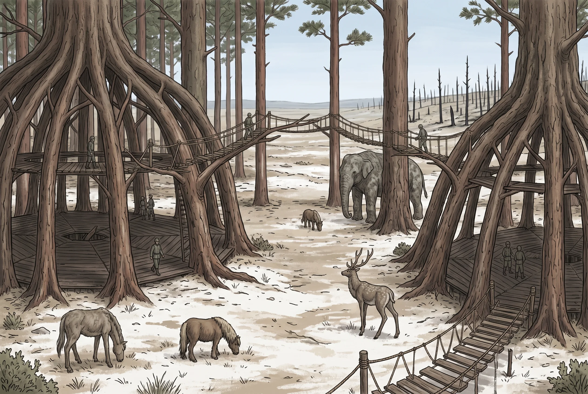

Verday Groves
Boundary · Nysis · Verdani heartland; hardwood, seed stock, medicinal green
Region: Verday Groves · Location: Grove Location detail: Between the eastern flank of the Pinna and the shore of Falter Sound
Between the eastern flank of the Pinna Mtns and the shore of Falter Sound lies a belt of woodland that does not look like the rest of the region’s forest, because it is not forest. It is garden, two centuries out of true, but garden still. These were bio-preserves and estate grounds before the Unmaking, laid out by people with an intention, and the intention is still visible in the spacing of the trees, the survival of species that have no business growing together, and the way a stand ends in a line rather than a fade.
This is Verdani country. Not exclusively and not by treaty, but in every way that matters on the ground: the groves sit on surviving Verdant flow, and where the Verdant runs the Verdani are, because their physiology runs better near it and because there is no second belt of it anywhere on this map. Passage is generally permitted and generally uneventful. It is also watched. Travellers report the specific sensation of having been looked at by something that then declined to come out, and the road north toward Ravenna carries carved boundary posts that are not decorative and are not a suggestion.
Arbora
A day in from the southern posts the ground opens into a shallow bowl of old oak, hornbeam and lime, and there are perhaps a thousand people living in it, and a visitor can stand in the middle of the town for some minutes before understanding that he is in one.
Nothing here was built. It was grown, and grown slowly, and mostly by people who did not live to see it finished. Halls are trees: a ring of trunks trained inward over forty or sixty years until the crowns close and the interior is a room, floored with laid plank because a floor is the one thing that will not grow. Walls are living stems woven while green and left to thicken; a wall in Arbora is thicker than it was last year, and will be thicker again. Doorways are gaps that were held open. Windows are gaps that were held open in a different place. The whole town is a single continuous act of horticulture running for two hundred years, and it is not finished, and the concept of finished does not apply.
Above the halls run the skywalks. Branch is led to branch and held in contact until the two grow together and become one branch: the trick is ordinary and any orchard-keeper knows it happens, but nobody outside the Groves has ever done it at this scale or with this patience. A walk takes a generation. It is then stronger than any bridge Freeport has ever built and grows stronger every year afterward, which is the reverse of how the rest of the world’s structures behave. The upper town is three levels of them in places, with rope-and-slat spans thrown across the young gaps as scaffolding for what the trees are being asked to do next. A Verdani will step onto a hundred-year-old span without looking at it and hesitate at a rope walk, because one of them is alive and known and the other is merely engineering.
The Conclave would call the work horticulture and be wrong, and call it magic and be wrong. It is Verdant lore: a discipline, taught by demonstration, held by families, written down nowhere, and consisting mostly of knowing exactly how much to ask of a living thing and then waiting. Nobody hurries a tree. The single most common instruction given to a Verdani child is to leave it alone.
The town is not named for anything. Arbora is what was cut into the stone at the preserve gate before the Fall, and the people who stayed kept saying it because it was written down, and now it is a place.
The Meadows
South and east of the bowl the preserve opens into managed grassland, and this is where a stranger’s eye first snags on something it cannot explain: the herds.
Work ponies, first: shaggy, ordinary, sound, the animals that do the actual hauling in a country with no cart roads worth the name. And among them, grazing the same grass with complete indifference, the gaunts: horse-shaped, taller, dry-looking, hides in overlapping dark scale rather than hair, eyes a pale luminous white that catches a lantern from a long way off and holds it. The Verdani bred them, over generations, for the one job the ponies cannot do: going to the blight fringe and coming back. A scaled hide turns what the fringe does to skin; the eyes see in the fog and the dark under the canopy; they eat what is there.
A gaunt is worth more than any horse in Nysis and no Verdani has ever sold one. This is understood by everybody and tested about once a decade, and the people who test it are the reason the meadows are watched more closely than the town.
The Gnarls
The largest thing living in the Groves is not owned, herded, hunted or fenced, and the Verdani would find all four suggestions equally strange.
A gnarl stands to the height of a mature tree on legs like trunks, carries a spray of horn that twists and interlaces exactly like branching, and wears a hide textured as bark. It eats lichen and leaves and moves alone or in small family groups, and it is not aggressive until it is threatened, at which point it is a rank of problem that very little in this region can answer. Its hide keeps the season it is living in: green through youth, deepening to summer brown-green, then amber, then (in the oldest) a cold bare grey. A grey gnarl in the Groves has been standing there since before the family currently tending that grove was in it, and is known, and has a name, and its death is an event that people travel for.
They are also a survey instrument, and this is why the Verdani care about them beyond affection. A gnarl is symbiotic with Verdant flow and will not thrive without it, so where the gnarls are, the flow is good, and where a group thins out or drifts away, something under the ground has changed and will show up in the trees three years later. The Verdani have read the land this way for two centuries and have never had to write any of it down.
And there is the call: low, carrying, resonant, audible for miles and universally described by outsiders as the most mournful sound in the world. The Verdani do not hear it that way. They hear a bearing and a state. A gnarl calling in the ordinary run of things is weather; a gnarl calling wrong, at the wrong hour, from a place it should not be, is the fastest news in the Groves and reaches Arbora well ahead of any runner.
And here is the thing nobody tells a visitor. A threatened gnarl does not flee. It plants its feet among a copse, straightens, stretches its neck and holds perfectly still, and at forty yards in poor light it is a tree. A Greatmask does the same: the size and silhouette of an old tree, motionless among trees for years, waiting on a line being crossed. The resemblance is not a coincidence and the direction of the borrowing is the one you would expect: the Verdani watched something that had solved the problem and copied the solution.
The practical effect on anybody walking these woods without an escort is that every large still shape is a question with two answers. One of them is an animal that wants to be left alone. The other has been waiting since before you were born, for you specifically, in the sense that it was told what to wait for.
The Cultivations
The arboretums are the old preserve collections, still standing, still tended, and no longer entirely what they were. Species are here that exist nowhere else on the map, kept alive by two hundred years of unbroken succession: a family that has held one stand since before the Unmaking, passing on which trees to take cuttings from and in what year. Single trees carry thirty and forty grafts, so that a cultivar with two survivors left can be carried on somebody’s shoulder to a third place. The Azure Mendicants buy green medicinals out of the beds here and are careful not to ask too loudly where they came from.
And at the northern edge, out where the ground starts going wrong, the Verdani keep a plantation that nobody sensible would keep. Mask-wood must be hardwood that grew at a blight fringe, because that is where Amber seeps into a grain over decades and there is no other way to get it. So they plant at the fringe, deliberately, in rows, and tend it for eighty years, and go carefully and do not stay long. Half of every generation’s planting is lost. The trees that survive are the reason a Mask Risen can be made at all, which means the Verdani’s one genuine weapon is farmed, on a schedule, on ground that is killing the farm.
The Argument
The Groves are also where it was decided to start hurting the Conclave, and the decision was not unanimous and is not settled.
Extraction at Ravenna has been eating the northern fringe for two centuries and talking about it did not work; that much is agreed. What is not agreed is what follows. The raids have grown more frequent and more serious, and the case for them is that a fence which is never enforced is not a fence. The case against them is made by elders who point out that the Verdani have exactly one advantage (that they can wait longer than anyone else alive) and that a war is the single fastest way to spend it. Those elders have a second argument they do not make in public: the Verdani are already losing one. A century and a half of patient incremental pressure into the Profunda Forest has produced nothing but dead walkers and masks that did not come back, and everyone in this room knows it, and nobody says it.
Somewhere in these woods stands a Greatmask, keyed to the Groves rather than to any person, held by a line of keepers who pass the obligation down and have held it since before the argument started. Both sides of the argument want it. Neither has asked.
Features
- Woodland laid out with an intention two centuries stale, ending in lines
- Halls that are rings of living trunks, closed overhead, floored in plank
- Skywalks grown branch into branch, stronger every year they stand
- Rope-and-slat spans strung as scaffolding for what the trees will become
- Walls thicker this year than last
- Meadows of work ponies grazing beside scaled gaunts
- Gnarls at the height of trees, hide keeping the season they are living in
- A grey-hided gnarl that is older than the family tending its grove
- A call carrying for miles, and the Verdani taking a bearing off it
- Large still shapes among the trunks, and no way to tell which is which
- Pale luminous eyes turning together at a lantern, at distance
- Arboretum stands held by one family since before the Unmaking
- A single tree carrying forty grafts
- Mask-wood planted in rows out where the ground goes wrong
- Carved boundary posts, weathered, precisely placed
- No Conclave presence at all, anywhere
Quest Starter
A Conclave survey party has entered the Groves to establish that a Verdant source here falls under the order’s extraction monopoly. They have been gone eleven days. The Conclave wants them recovered quietly. The Verdani have sent word (through three intermediaries, in careful language) that the party is alive, and that the survey is not.